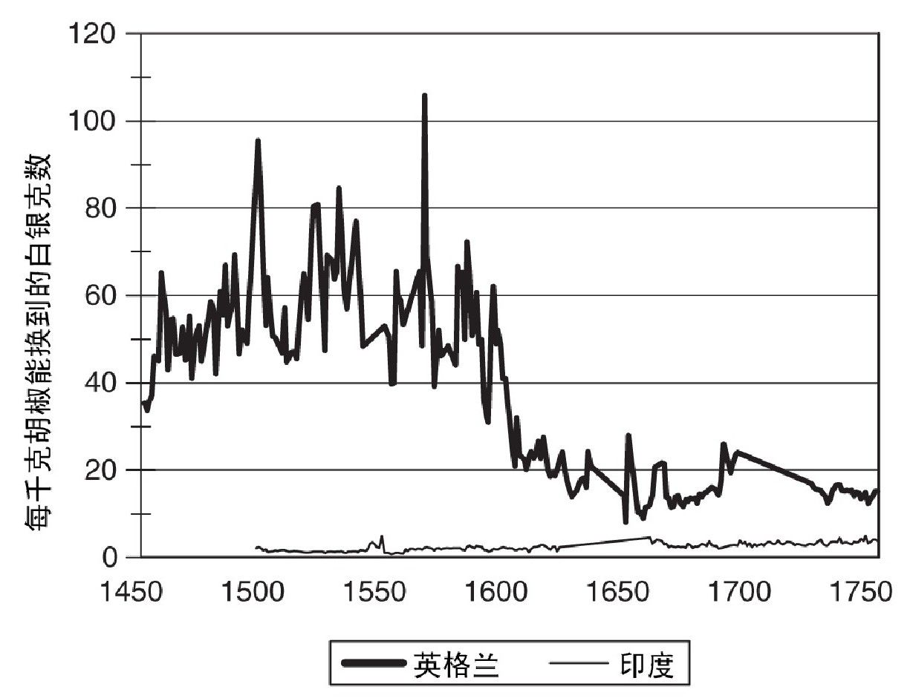
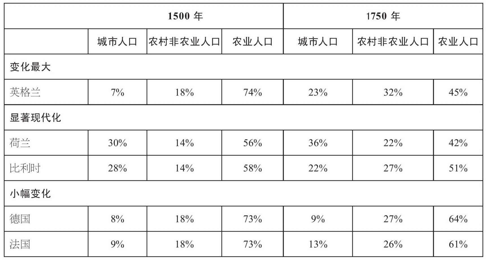
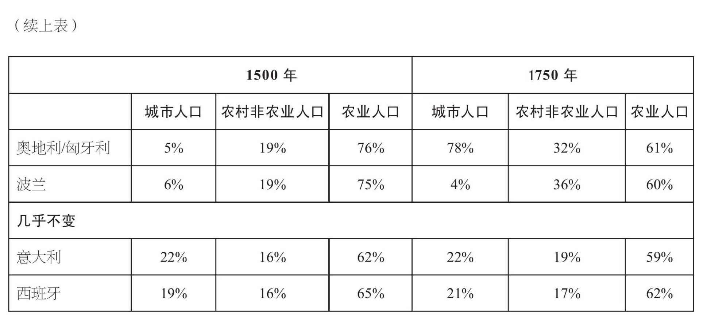
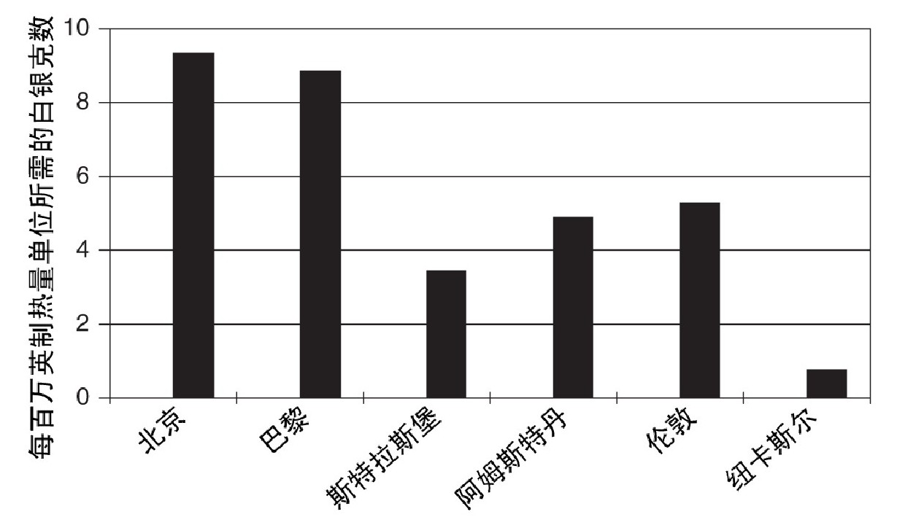
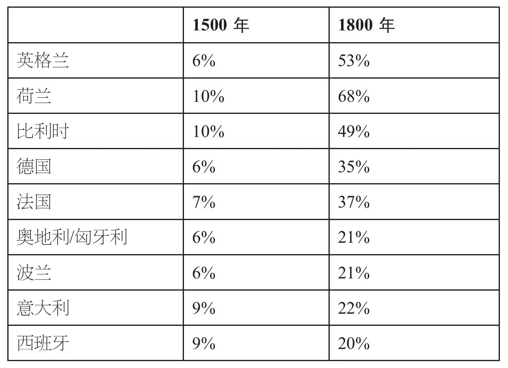

为什么世界变得越来越不平等？答案涉及两个方面：一方面，诸如地理、制度和文化之类的“根本要素”影响着经济发展；另一方面，“历史上的偶然事件”也在起作用。
地理因素十分重要。疟疾阻碍了热带地区的发展，而英国的矿产资源则为工业革命提供了基础。不过，地理因素并不是唯一的解释，因为它的重要性取决于技术和经济条件。事实上，技术进步的目标之一就是减少恶劣的地理条件所产生的负面影响。比如，18世纪时，煤矿和铁矿的位置决定了炼铁高炉的位置。如今，海上运输成本低廉，日本和韩国可以从澳大利亚和巴西购买所需的煤炭和铁矿石。
文化往往被用来解释经济成就。比如，马克斯·韦伯认为，新教思想使北欧人比其他地区的居民更加理性，更努力工作。当韦伯于1905年提出这一设想的时候，他的理论听起来颇有道理，因为当时信奉新教的英国比信奉天主教的意大利更加富裕。不过，现在的情况恰好相反，因此韦伯的理论并不成立。另一种文化论调认为，第三世界的农民之所以贫困，是因为他们坚持传统的耕作方法，没有对经济激励做出反应。不过，事实恰好相反：贫困国家的农民试验了新的农作物和耕作方法，他们合理雇用劳动力，而且在不亏本的情况下，他们愿意使用现代肥料和种子；他们还像富裕国家的农民那样，根据价格变化来调整种植的农作物品种。这些农民之所以贫困，是因为他们以低廉的价格出售农作物，同时也因为他们缺少合适的技术，而不是因为他们不愿意使用。
虽然对于非理性和懒惰的文化解释并不可靠，但某些文化因素确实影响了经济表现。尤其是读写和计算能力的普及，自17世纪以来，已经成为取得经济成功的必要条件（即便不是充分条件）。这些智力技能有助于贸易繁荣和科技进步。大众教育使更多的人掌握了读写和计算能力，对于经济发展而言，大众教育已经成为各国普遍采取的策略。
政治和法律制度的重要性已经成为争论的热点。许多经济学家认为，明确的财产权、低税收和政府的最少干预造就了经济繁荣。独断专行的政府不利于经济增长，因为这将导致高税收、行政管制、腐败和寻租行为——这些因素都将减少生产的积极性。这些观点被用来分析历史现象。有人认为，像西班牙和法国那样的绝对君主制和像历史上的中国、古罗马或阿兹特克那样的帝国压制了经济行为，因为它们禁止国际贸易，并且威胁到个人的财产乃至生命。显然，这些观点是在附和以亚当·斯密为首的18世纪的自由主义者。经济发展获得成功，是代议制政府取代绝对君主制的结果。1568年，荷兰推翻西班牙的统治，成立了共和国。随后荷兰经济取得了快速发展。17世纪早期，在詹姆斯一世和查理一世的统治下，英国经济发展受阻，因为这两位君主无视法律，强行征税和放贷。查理一世试图在不召开议会的情况下维持统治，但未能如愿。随后英国内战爆发。1649年，国王以叛国罪被处决。然而，王政复辟之后，保皇派和议会之间的争端依然持续，最终导致了1688年的光荣革命。在这场革命中，詹姆斯二世逃离英国，议会将王冠交给了威廉和玛丽。随着议会获得最高权力，绝对君主制遭到压制，英国经济开始繁荣。这就是经济学家描述的历史发展。
不过，在经济学家强调英国制度优越性的同时，历史学家一直在研究绝对君主制和东方的专制统治是如何起到积极作用的。他们通常认为，绝对君主制和专制统治有利于维持和平、有秩序和运作良好的政府。于是贸易开始繁荣，区域性的专业化程度提高，城市开始扩张。随着各个地区变得日益专业化，国家收入开始增长，这一过程被称为“斯密式增长”。经济繁荣面临的最大威胁是蛮族的入侵。吸引入侵者的，是这些文明所生产的财富，而不是皇帝的横征暴敛或过多干预。
制度、文化和地理因素总是藏身幕后，而技术进步、全球化和经济政策则是造成不均衡发展的直接原因。工业革命本身就是全球化第一个阶段的结果。15世纪晚期，哥伦布、麦哲伦和其他伟大探险家的航行开启了全球化的进程。因此，巨大的发展差异始于第一次全球化。
全球化需要能远赴重洋的船只。欧洲人直到15世纪才有了这样的船。这些新发明的“全帆装”船有三根桅杆：船的前部和中部安装了横帆，船的后部则安装了大三角帆。同时，船体变得更加坚固，舵取代了船桨，这些改变造就了能够完成全球航行的船只。
起初，这些全帆装船所产生的商业影响仅限于欧洲地区。15世纪，荷兰人开始将波兰的谷物从但泽运往荷兰。到了16世纪晚期，他们又将谷物运往西班牙、葡萄牙和地中海沿岸。紧接着就开始了纺织品的运输。中世纪时，意大利城邦主宰着制衣业，但英国和荷兰的制造商努力仿造意大利布料，生产出轻便的毛料布。到了17世纪早期，这些“新布料”已经遍及地中海地区，英国人和荷兰人将意大利人挤出市场。这是一次重大变化，由此欧洲的制造业开始向西北欧地区转移。
不过，全帆装船所产生的最重大的影响在于地理大发现。由印度、阿拉伯和威尼斯等地的商人组成的贸易网络从阿拉伯购买胡椒和香料，途经中东，运往欧洲。葡萄牙人希望能通过全程海路运输与之竞争。15世纪，葡萄牙人沿着非洲海岸向南航行，寻找前往东方的航线。
1498年，瓦斯科·达伽马抵达印度的科钦，他将船只装满了胡椒。科钦当地的价格只有欧洲的4%左右（参见图5）。价差中剩余的96%是运输成本。到1760年，印度和英国之间的价差下降了85%，这一降幅体现了全程海路运输的好处。不过，16世纪时，只有葡萄牙人从下降的运输成本中获利，因为该国由国家掌控的贸易公司将价格维持在中世纪水平，把差额都作为利润收入囊中。一直到17世纪早期英国和荷兰各自建立东印度公司才打破了葡萄牙人的海上垄断，并导致欧洲价格下降2/3。印度的胡椒卖家得到的真实收入只提高了一点点：欧洲消费者得到了亚洲贸易的大部分好处。
热那亚水手克里斯托弗·哥伦布提出另一个方案，他建议向西航行，从欧洲直接前往亚洲。他说服西班牙国王斐迪南二世和伊莎贝拉女王资助他的航行。最终他于1492年10月12日抵达巴哈马群岛，当时他以为自己到了印度。但实际上他“发现”的是美洲，这一发现改变了世界历史。
哥伦布和达伽马的航海探险引发了对于帝国殖民地的争夺。早期获胜的是葡萄牙人和西班牙人。在印度第乌的两次战斗中，葡萄牙人击败了威尼斯人、奥特曼帝国的军队和亚洲的地方势力，在印度洋区域建立起霸权。随后，他们将统治范围向东推进至印度尼西亚，沿途建立了一连串殖民地。最终，葡萄牙人来到传说中的香料群岛（即印度尼西亚的马鲁古群岛），当地盛产丁香、肉豆蔻果实和干皮。1500年，葡萄牙人还意外发现了巴西，后者成为了他们最大的殖民地。

图5 胡椒价格，已调整到1600年的价格水平
西班牙帝国更加富庶。1521年，埃尔南·科尔特斯征服了阿兹特克帝国；十一年后，弗朗西斯科·皮萨罗征服了印加帝国。这两次胜利成为西班牙帝国的最大成就。依靠枪炮、马匹、诡计和天花，人数不多的西班牙武装两次击败大规模的本土军队。他们把阿兹特克帝国和印加帝国洗劫一空，将大量财富带回西班牙。紧随征服而来的是矿物大发现，在玻利维亚和墨西哥都发现了大规模的白银矿。这些白银大量流入西班牙，为哈布斯堡家族的军队提供了军费，协助他们在欧洲各地与新教徒作战；同时，这些白银也为欧洲人提供了足够的现金，用于购买来自亚洲的商品。此外，这笔财富也引发了长达数十年的通货膨胀（被称为价格革命）。
16世纪，北欧人也进行了帝国探险，但规模不大。1497年，英国人派遣约翰·卡波特向西航行，最终到达布雷顿角，也就是现在的纽芬兰。虽然早在几个世纪前巴斯克水手就已经到纽芬兰大浅滩去捕鱼，卡波特的航行依然被视作一次地理发现。16世纪三四十年代，法国人三次派遣雅克·卡蒂埃前往加拿大。和墨西哥或马鲁古群岛所带来的利益相比，法国人与加拿大土著人之间的毛皮交易不值一提。
直到17世纪，北欧人才成为重要的帝国主义势力。他们最喜欢采取的组织形式是将帝国主义与私营经济结合在一起的东印度公司。通常，这些东印度公司都是高度资本化的股份公司，它们在亚洲或美洲进行贸易，掌握一定的军事力量和海上武装，并在海外建立起具备防御能力的贸易站。所有的北欧强国都成立了东印度公司。1600年，英国东印度公司获得特许经营权。两年后，荷兰东印度公司成立。
荷兰东印度公司打败葡萄牙人，在亚洲建立起荷兰帝国。荷兰人于1605年占领马鲁古群岛，1641年占领马六甲，1658年占领锡兰，1662年占领科钦。1619年，他们把雅加达作为印度尼西亚领地的首府。17世纪三四十年代，荷兰人占领了巴西。此外，他们还占领了加勒比海地区出产蔗糖的一些岛屿，并于1624年建立了纽约，1652年又在南非建立了开普殖民地。
英国人同样在17世纪建立起自己的帝国。在亚洲，英国东印度公司于1612年在印度苏拉特附近的苏瓦里的海战中击败了葡萄牙人。随后，英国人在苏拉特（1612年）、马德拉斯（1639年）、孟买（1668年）和加尔各答（1690年）建立起贸易站。到1647年，东印度公司已经在印度境内拥有23家商业机构。在美洲，许多个人和团体建立起殖民地。1607年，弗吉尼亚州的詹姆斯敦是最早建立的殖民地。随后是著名的普利茅斯殖民地，建立于1620年。十年之后，更为重要的马萨诸塞湾殖民地建立起来。17世纪二三十年代，巴哈马群岛和加勒比海地区的一连串岛屿被英国人占据。1655年，牙买加成为大英帝国的一部分。
英国政府积极扩张帝国，荷兰人成为了最大的牺牲品。奥利弗·克伦威尔在共和国时期（1640年—1660年）率先采取了扩张措施，王政复辟后这些措施依然延续。海军开支大幅增加。1651年，第一个航海法案通过。这一举措体现了重商主义思想，旨在将荷兰人排斥在大英帝国的贸易范围之外。为了争夺商业优势，第一次英荷战争（1652年—1654年）爆发，但效果并不理想。查理二世于1660年复辟后，各种航海法案得以恢复和延续，海军（现在变成了皇家海军）兵力增加，与荷兰人进行了多次战斗（1665年—1667年和1672年—1674年）。1664年，英国人占领纽约。沿着美国海岸线，英国人建立起多个殖民地，从佐治亚一直到缅因。通过将烟草、稻米、小麦和肉类出口到英格兰和加勒比海地区，这些殖民地的经济飞速发展。到1770年时，英国统治下的美洲地区人口已经达到280万，将近英格兰本土人口的一半。
英格兰和荷兰与海外殖民地之间的贸易往来推动了它们的经济发展。城市持续扩张，以出口为导向的制造业快速增长。职业结构也相应发生了变化。表3将欧洲主要国家的人口分为三类：农业人口、城市人口和农村地区的非农业人口。在中世纪，约3/4的人从事农耕，大多数制造业都在城市，“农村地区的非农业人口”包括村里的手工匠人、牧师、马车夫和庄园里的仆人。1500年，意大利和西班牙是当时最发达的经济体，拥有最大的城市，出产当时最好的产品。低地国家（主要是现在的比利时）是此类经济体的延续。荷兰人口很少，英格兰比一个牧场也大不了多少。
表3 1500年至1750年，按行业划分的人口比例


工业革命前夕已经出现了具有重大影响的变化。英格兰是变化最大的地区，农业人口比重下降到45%。在整个欧洲，英格兰是城市化速度最快的地区。1500年伦敦人口为5万人，1600年增加到20万人，1700年增加到50万人，最终在1800年超过100万人。1750年，英格兰人口中32%的人属于农村地区的非农业人口。这些人绝大多数从事制造业，他们所生产的商品被运往欧洲各地，有时甚至被运往世界各个角落。比如，牛津郡威特尼地区的工匠将毛毯出售给哈德孙湾公司，后者用这些毯子去和加拿大的土著人交易毛皮。低地国家有着类似的经济发展轨迹。荷兰的城市化程度甚至超过了英格兰，并且同样拥有大规模的、以出口为导向的乡村工业。
欧洲其他地区的变化幅度小于英格兰。欧洲大陆几个大国的农业人口比重略有下降，农村工业人口比重略有增加，没有额外的城市发展。西班牙和意大利看起来处于停滞状态，人口比例没有发生变化。
西班牙尤其不幸。表面看来，它是16世纪最成功的帝国主义国家，因为拉丁美洲出产如此多的白银。然而，白银的输入导致西班牙出现了比其他地区更为严重的通货膨胀。结果，西班牙的农业和制造业失去了竞争力。西班牙城市人口比例保持稳定，这掩盖了背后的巨大变化——在马德里凭借从美洲掠夺来的财富迅速扩张的同时，旧的工业城市人口大幅减少。全球化推动欧洲西北部地区向前发展，却阻碍了南欧地区的前进脚步。
全球性经济体取得的成功，对于经济发展具有重大影响，主要包括几个方面：
第一，城市化和乡村制造业的发展增加了对于劳动力的需求，从而导致劳动力市场供不应求，工资水平居高不下。伦敦和阿姆斯特丹的生活水平较高（参见图3）。
第二，发展中的城市和工资水平较高的经济体对于农业有着巨大需求，既需要大量食物，同时也需要大量劳动力。结果就是，在英格兰和荷兰两地都出现了农业革命。在这两个国家，农业劳动者的人均产量都增加了约50%，达到欧洲地区的最高水平。
第三，不断增加的城市需求还导致英格兰和荷兰两地出现了能源革命。在中世纪，城市中使用的主要燃料是木炭和木柴。随着城市的发展，木材价格急速上涨，人们开发出替代能源。在荷兰，替代木材的是泥煤；在英格兰，则是煤炭。达勒姆和诺森伯兰地区的煤炭被开采出来，沿着海岸线运往伦敦。18世纪，英格兰是世界上唯一拥有大规模煤炭产业的国家，它因此得以享用世界上最便宜的能源（参见图6）。
第四，工资水平较高的经济体通常能培养出具有良好读写能力、计算能力和技术水平的工人。表4估算出了1500年至1800年各个地区的读写能力（以能够自行签名而不是画押作为衡量标准）。欧洲各地的读写能力都在提高，但西北部地区的进步幅度最大。宗教改革常被当作读写能力提高的主要原因，但其实改革并不足以解释这一现象，因为在欧洲东北部地区，比如法国、比利时和莱茵河流域（都奉行天主教），当地人的读写能力并不亚于荷兰人和英格兰人。读写能力提高的真正原因在于商业化经济体制之下的高工资。商业和制造业的扩展对教育提出了更高要求，因为当时教育在商业上具有重要价值。与此同时，工资水平较高的经济体为家长提供了足够的资金，用于支付子女的教育费用。

图6 能源价格
表4 成人读写能力，1500年至1800年。能够自行签名的成人占总人口的比例
